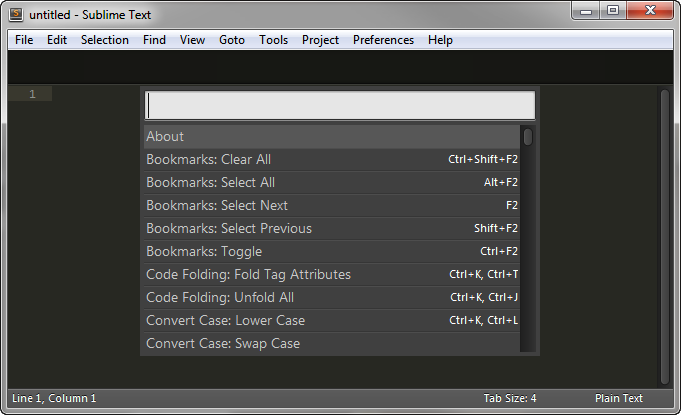
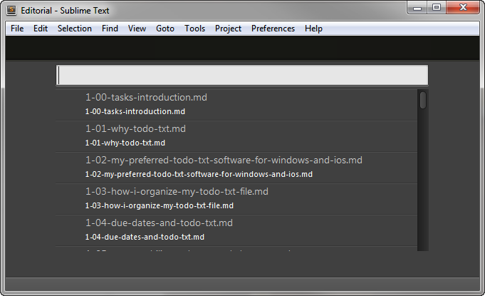
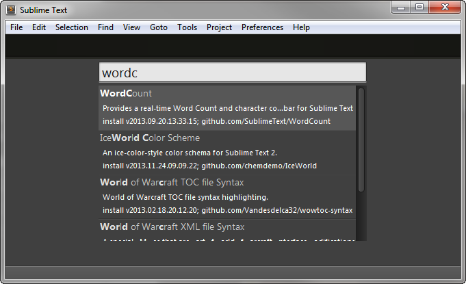
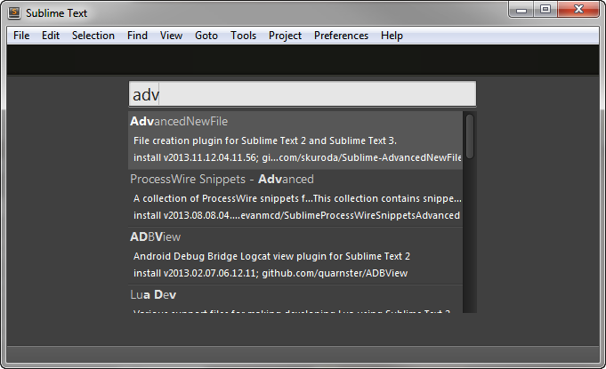
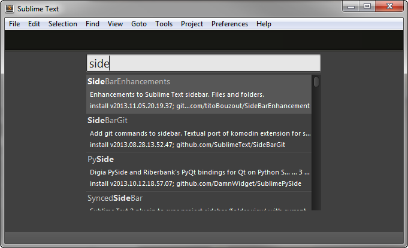

Other Sublime Text Features and Packages for Writers
Now that you set up Sublime Text for Markdown editing and preview, and to output Markdown files to Word .docx format, you can turn your attention to mastering, and adding on, some other functionality that is helpful for writing and working with lots of files. Some of that functionality is built in. The rest can be installed as packages.
Built-in features for fast, effective word processing
Command Palette
The command palette, which we have used to install packages, can be used to access any command in Sublime Text. It is great when you don't remember a keyboard shortcut and don't want to dig through the menus.

Goto Anything
Control+p opens Sublime Text's Goto Anything panel. After that, you just type words, and files that match those words start to appear. Choose a file, hit enter, and it opens. If you type @ in the Goto Anything panel, an outline of your document appears, based on the the Markdown headings, and you can easily jump to any other section. The more you type after "@", the more the list of headings gets filtered down. Control+r is a shortcut to that second, in-document Goto Anything feature.

Minimap
Sublime Text shows you a miniature version of your entire file in the upper right-hand corner. You can show or hide it by going to the View menu. You can click and drag on the minimap to move around the file.
Expand selection
Control+l selects the entire line you are editing. Pressing control+l will add the next line, and the next, and the next, as many times as you press it.
Similarly, control+d selects the word your cursor is on. Pressing control+d again keeps selecting instances of that word. Now, with multiple instances selected, you can replace that word everywhere it appears just by typing over it. With a few, rapidly-repeated keypresses, you can do a find/replace without moving out of the line you are working on.
Find/Replace
On Windows, control+f and control+h bring up fantastic implementations of familiar Find and Find and Replace commands. Also, there is a "find in files" command at your fingertips (control+shift+f) to search for text within all files in your current Sublime Text project, a folder tree, all open files, and more.
Quickly moving lines/paragraphs up and down
When you type control+shift+up or control+shift+down, Sublime Text moves the current line or selection up or down. This makes rearranging blocks of text really, really quick.
Indent/unindent blockquotes and list items
Control+] will indent a line without selecting it, and control+[ will unindent it. You can also select multiple lines and indent them with tab and unindent them with shift+tab.
Deleting entire lines
One of my most-used keyboard shortcuts in Sublime Text is control+shift+k, which deletes the current line. Due to word wrap, one line in a text or Markdown file will be an entire paragraph. This key combination is a great time-saver for me when I'm cleaning up a jumble of notes into nice sentences and paragraphs.
Quickly wrap a selection in quotes, parentheses, brackets
In Sublime Text, typing an open parenthesis or a quotation mark will also output the closing parenthesis or quotation mark. If you select text (with the mouse or with shift+arrows), and you type an opening brace, bracket, or quotation mark, the entire selection will be surrounded by opening and closing braces, brackets, or quotation marks. This is slick, and helps avoid non-matched punctuation.
If this setting drives you crazy, though, you can turn it off by inserting the following line in your "Sublime Text - User" settings file.
"auto_match_enabled": trueSpell Check
Sublime Text has a built-in spell checker. You have to turn it on by pressing F6 (or through the menus: View > Spell Check). The spell check merely draws red squiggles underneath misspelled words, as does Word's "check spelling as you type" feature. It is adequate for drafting. I always run spell-check again in Word after I build my draft for publishing.
Add-on packages useful for writers
A few more packages round out Sublime Text for hardcore writing tasks.
Word Count
Install the "Word Count" package to add a live-updating word count to the Sublime Text's status bar (at the bottom of the window). In my opinion, every writer needs this functionality.

Advanced New File
Install the "Advanced New File" package to add a command to quickly create, name, and open a new file in your current Sublime Text project. After this package is installed, hit control+alt+n to call up a popup at the bottom of the editor, type in a file name, hit enter, and the new file opens right up. Be sure to add a file extension (.md for Markdown), or set the default file extension in the Advanced New File package's User Settings file:
{
"default_extension": ".md"
}
Side Bar Enhancements
Install the "SideBarEnhancements" package to add a right-click menu to your sidebar that adds a ton of useful commands you can run on files, including copy, move, rename, duplicate, delete, find text, and more. This is a must-install item if you use Sublime Text in Project mode.
